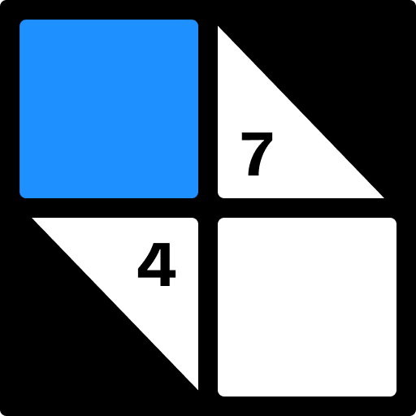

Kakuro
A number crossword. Fill the grid with digits 1 to 9 so every run adds up to its clue.
How to play
- Fill every white cell with a digit from 1 to 9.
- Each clue is the sum of the run of cells to its right (across) or below it (down).
- A digit can only appear once in each run.